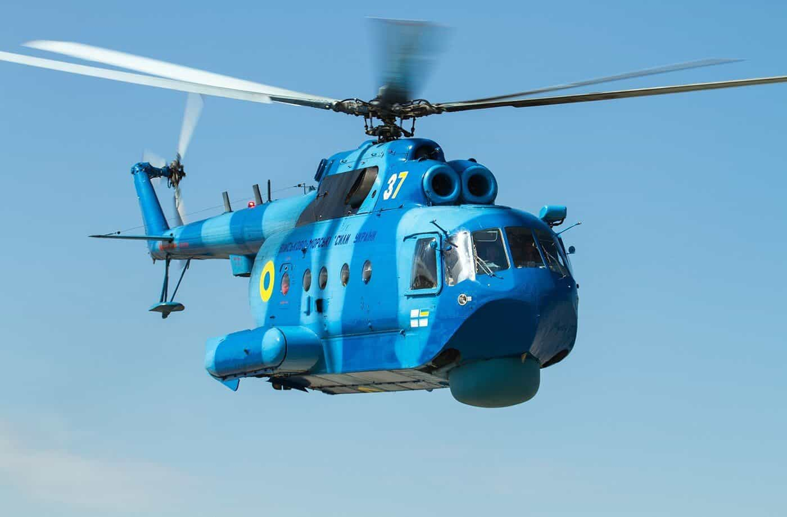
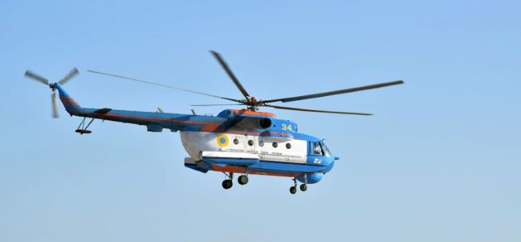
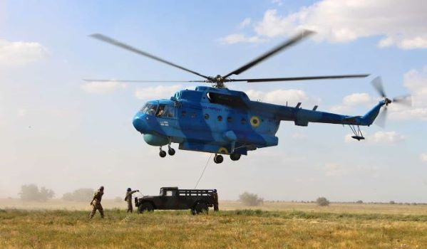

Мі-14ПЛ, Мі-14ПЛМ, Мі-14ПС
Мі-14(Haze за класифікацією НАТО)
Мі-14 - морський багатоцільовий вертоліт берегового базування, розробки ОКБ М. Л. Міля.
У середині шістдесятих років у Військово-морському флоті СРСР виникла гостра необхідність у спеціалізованому протичовновому вертольоті, побудованому на базі машини, котра себе добре зарекомендувала. Ним став Мі-14, побудований на базі вертольота Мі-8. Основні модифікації Мі-14ПЛ — протичовновий, Мі-14ПС — рятувальний, Мі-14БТ — тральщик.
Мі-14ПС та Мі-14ПЛ
Фюзеляж Мі-14 виконаний за типом «амфібія» з двома надувними поплавцями бочкоподібної форми з боків (балонетами), об'ємом 4 куб. м. У процесі робіт по темі конструкція Мі-8 зазнала суттєвих змін — по суті спроектовано новий вертоліт з потужнішими двигунами ТВ3-117 (2200 к. с.), новим головним редуктором ВР-14, ДСУ Аі-9. Рульовий гвинт перенесений на іншу сторону (на відміну від Мі-8), що збільшило його ефективність. На вертольоті 4-х стоєчне шасі, яке прибирається в польоті.
Обладнання вертольота також зазнало значних змін. На протичовновому Мі-14ПЛ встановлені РЛС «Ініціатива 2-М», гідроакустична станція «Ока-2», що опускається, магнітний визначник АПМ-60, КВ радіостанція Р-842М, УКХ радіостанція Р-860, радіовисотомір РВ-Зх, радіокомпаси АРК-9 і АРК-У2, доплеровський вимірювач ДІСС-15, автопілот АП-34Б, система автоматичного управління САУ-14.
У протичовновому варіанті вертольоти працюють парою. Один вертоліт виконує пошукові завдання і завантажується гідроакустичними буями РДБ-НМ (36 шт), а другий вертоліт є ударним і завантажується протичовновою зброєю
Мі-14ПС несе 10 рятувальних плотів на 20 місць кожен, рятувальну лебідку, здатну одночасно підняти трьох осіб, оснащений прожекторами. Також цей вертоліт може застосовуватися для транспортування вантажів на зовнішній підвісці, висадки морських десантів і просто для транспортних перевезень.
Вертольоти Мі-14 — єдині вітчизняні повноцінні вертольоти-амфібії, які дійсно можуть сідати, рулити і злітати з водної поверхні.
Вдалі конструктивні рішення, розроблені для Мі-14, в подальшому використовувалися на інших вертольотах: Мі-8МТ, Мі-24.